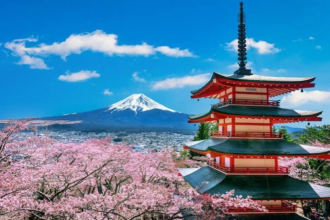

Коротка характеристика
Токіо — контрастна столиця Японії, де футуристичні технології гармонійно співіснують з давніми традиціями.
Чому саме Токіо?
Дивовижна інфраструктура, високий рівень безпеки, унікальна культура та неповторний ритм нічного міста.
Цікаві факти
- Агломерація Великого Токіо є найбільшою у світі за чисельністю населення.
- Перехрестя Сібуя вважається найінтенсивнішим пішохідним перехрестям у світі.
Визначні місця
- Храм Сеньсо-дзі в Асакусі
- Токійська вежа (Tokyo Tower)
- Район Акіхабара
Особиста оцінка
Оцінка: 9.5/10 — дивовижний мегаполіс, який варто відвідати кожному.
Додаткова інформація: Офіційний туристичний гід Токіо